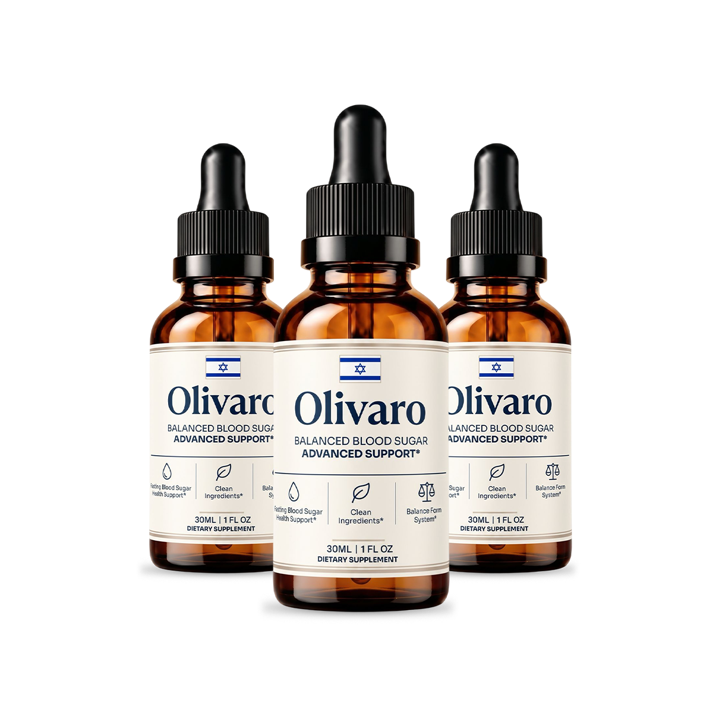
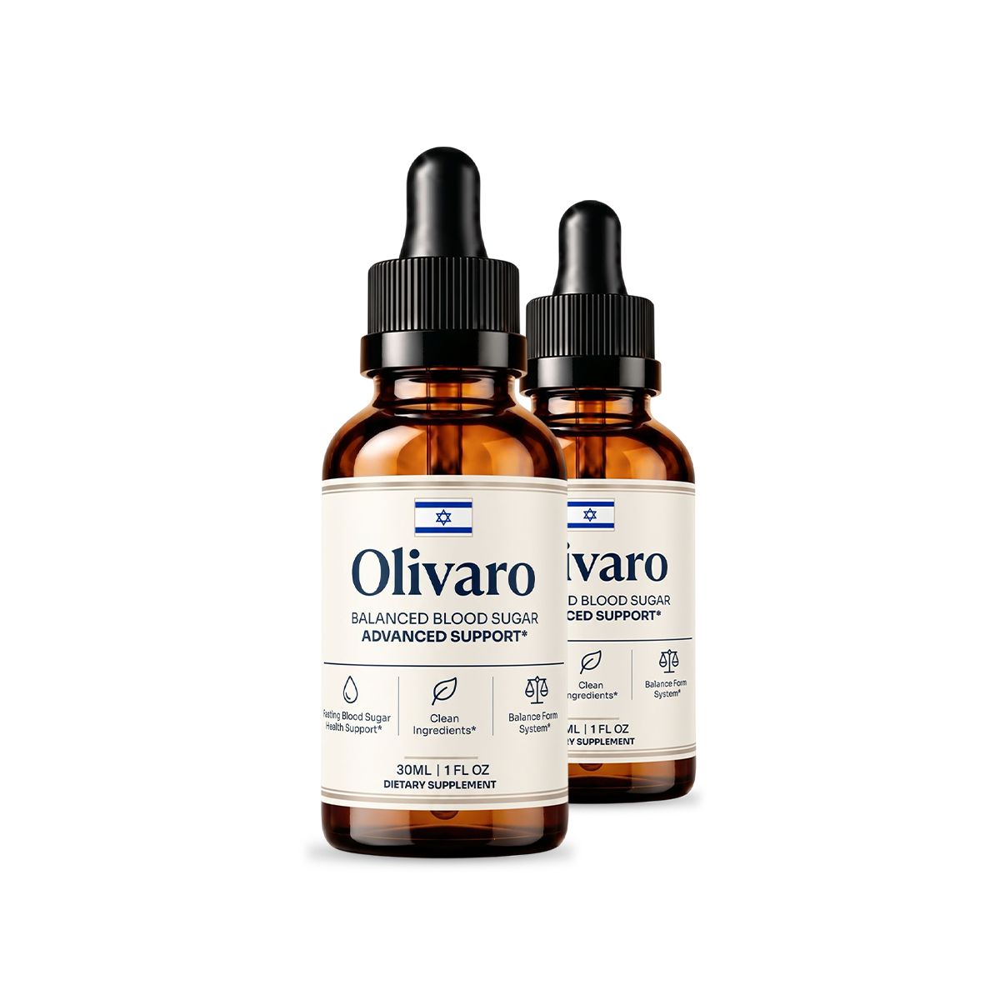
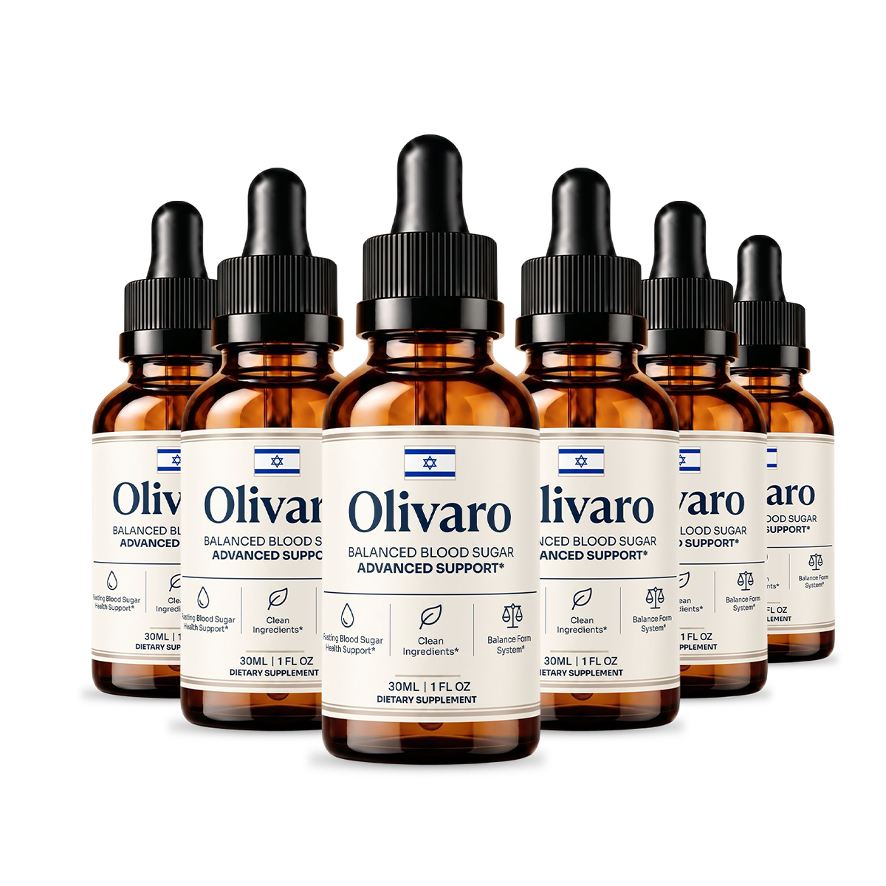
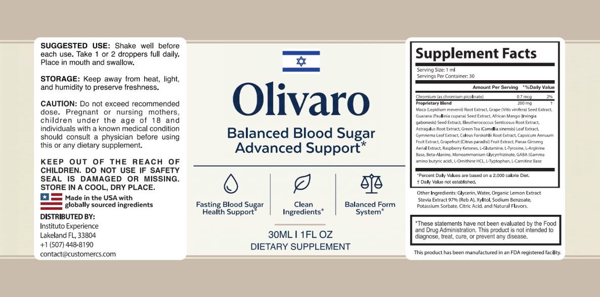

Olivaro®: Advanced Support for Healthy Blood Sugar & Metabolic Balance
Olivaro is a meticulously formulated, plant-based dietary supplement combining Berberine, Cassia Cinnamon, L-Leucine, Alkaloid Extract, and Magnesium. Designed to promote healthy glucose metabolism, enhance insulin sensitivity, and support overall metabolic wellness without harsh chemicals or invasive protocols.
Olivaro is a natural, once-daily formula formulated to support metabolic wellness through three pathways: glucose regulation, insulin sensitivity enhancement, and diabetogen targeting. Pricing runs $49–$69 per bottle, and every order is covered by a 60-day money-back guarantee.
60-day money-back guarantee Free US shipping on 3 & 6-packs Secure official checkout

Made In The USA
FDA-Registered Facility
GMP Certified
100% Natural Formula
What Is Olivaro™?
Olivaro is a dietary supplement formulated to support the body's natural mechanisms for maintaining healthy blood sugar levels. It combines a synergistic blend of natural ingredients known for their health-promoting properties.
Designed for individuals seeking to enhance their physical performance while maintaining metabolic balance, Olivaro serves as an ideal companion for those engaged in regular exercise and healthy dietary practices. The formulation is based on the understanding that maintaining stable blood sugar levels is crucial not only for energy but also for optimal mental and physical performance.
This supplement targets both fitness enthusiasts and individuals looking to manage their weight more effectively. By incorporating ingredients that have been researched for their beneficial effects on metabolism and energy levels, Olivaro positions itself as a powerful ally in your fitness journey. The promise of enhancing energy levels, reducing food cravings, and promoting deeper sleep resonates with anyone striving for a balanced approach to health.
9 Powerful Metabolic Benefits
Comprehensive metabolic support — from stable energy levels to long-term glucose management and overall well-being.
Blood Sugar Control
Olivaro aims to decrease blood sugar levels in people with diabetes and pre-diabetes. It helps regulate blood sugar spikes that often occur after meals, promoting levels already within the healthy, normal range.
Natural Formulation
The supplement uses safe, all-natural ingredients to maintain healthy blood sugar levels without the side effects often associated with allopathic medicines or synthetic alternatives.
Sleep Promotion
Olivaro encourages restful, deep sleep, which is crucial for overall health, metabolic recovery, and may help reduce the risk of diabetes-related complications.
Reduced Sugar Cravings
The supplement may help decrease sugar cravings and promote a feeling of fullness, making it easier to resist temptations and stick to a balanced, healthy diet.
Increased Energy Levels
Users may experience improved energy and endurance, potentially enhancing physical performance, reducing daily fatigue, and supporting stress reduction.
Weight Management
Olivaro’s powerful ingredients may aid in healthy weight loss and the reduction of stubborn body fat by supporting a well-functioning metabolism.
Antioxidant Properties
Many ingredients in Olivaro, such as juniper berries (high in Vitamin C), provide antioxidant benefits. This helps protect the body against oxidative stress and inflammation.
Improved Insulin Sensitivity
Ingredients like Cassia Cinnamon and Berberine may enhance the body’s response to insulin, allowing for better, more efficient glucose absorption and utilization.
Enhanced Glucose Metabolism
Components like Cassia Cinnamon and Manganese are involved in various metabolic processes, potentially aiding in the breakdown and utilization of glucose for energy.
Choose Your Olivaro Package
The biggest savings come with our most popular multi-bottle bundles. The 6-bottle pack is highly recommended for long-term metabolic support, as ingredients are scientifically proven to have their greatest effect after 90 days or more.
2 Bottle
60-Day Supply

Total: $69 + Shipping
- 30-day supply
- 60-day money-back guarantee
- One-time purchase, no rebill
3 Bottles
90-Day Supply
Total: $177 · Free US Shipping
- Free US shipping
- 90-day supply for consistent results
- 2 Free Wellness Bonus Guides
- 60-day money-back guarantee
6 Bottles
180-Day Supply

Total: $294 · Free US Shipping
- Lowest price per bottle
- Free US shipping
- 2 Free Wellness Bonus Guides
- 60-day money-back guarantee
Try Olivaro Completely Risk-Free
Olivaro is backed by a 100% money-back guarantee, 60 full days from your original purchase. If you’re not totally and completely satisfied with the product or your experience, simply return the product, even if the bottles are empty, within 60 days for a full, no-questions-asked refund.
3 Pathways to Metabolic Wellness
Olivaro works with your body's natural systems to support healthy blood sugar, stable energy, and optimal metabolic function from the inside out.
Regulates Glucose & Reduces Cravings
Compounds like Berberine activate pathways that regulate glucose metabolism. By supporting steady glucose levels, Olivaro minimizes intense hunger signals, empowering users to make healthier choices throughout the day.
Enhances Metabolism & Energy
L-Leucine supports muscle protein synthesis, while other ingredients stimulate metabolic processes. This allows the body to utilize glucose more efficiently for energy, translating into improved stamina and reduced fatigue.
Promotes Restful Recovery & Sleep
Quality sleep is essential for metabolic health. The amino acids and natural compounds in Olivaro support relaxation and reduce stress, allowing for deeper, more restorative sleep to break the cycle of blood sugar-related fatigue.

5 Clinically Studied Metabolic Ingredients
A research-informed formula making Olivaro more than a simple daily wellness supplement. Thoughtfully designed to provide comprehensive nutritional support for nerve health, antioxidant balance, and overall cellular wellness.
L-Leucine
An essential amino acid that plays a critical role in protein synthesis and muscle recovery. Research suggests it may enhance insulin sensitivity, indirectly aiding in improving metabolic rate and overall glycemic control while helping reduce muscle loss during weight management.
Alkaloid Extract
Derived from various plants, these compounds are known for their diverse biological activities, including the ability to help regulate blood sugar levels. They can enhance insulin sensitivity, allowing for better glucose uptake by the cells, while providing antioxidant protection.
Cassia Cinnamon
Used for centuries in traditional medicine. Active compounds like cinnamaldehyde have been scientifically proven to help modulate glucose metabolism and improve insulin sensitivity, while also providing anti-inflammatory properties for overall metabolic health.
Berberine
A bioactive compound known for profound effects on metabolism. Studies show it can significantly lower blood sugar levels by enhancing insulin sensitivity and reducing sugar production in the liver, while also helping regulate glucose and lipid metabolism.
Magnesium
An essential mineral associated with improved insulin sensitivity and blood sugar control. It plays a crucial role in energy production and muscle function, and can also contribute to better sleep quality, which is essential for recovery and overall well-being.
Olivaro vs. Typical Blood Sugar Supplements
Not every metabolic health product is built the same way. Here's how Olivaro's transparent, plant-based formula stacks up.
| Feature | Olivaro™ | Typical OTC Products |
|---|---|---|
| Once-daily, simple dosing | ✓ Yes | ✗ Often 3-4 pills daily |
| 100% Transparent Labeling | ✓ All ingredients listed | ✗ Hidden in proprietary blends |
| Berberine + Cassia Cinnamon | ✓ Yes, clinical doses | Varies / Rarely combined |
| Stimulant-free & Non-Habit Forming | ✓ Yes | Often contains caffeine or stimulants |
| Manufacturing Quality | ✓ USA, FDA-registered, GMP | Often overseas, variable standards |
| Money-Back Guarantee | ✓ 60 days | ✗ Rarely offered |
Choose Your Olivaro Package
The biggest savings come with our most popular multi-bottle bundles. The 6-bottle pack is highly recommended for long-term metabolic support, as ingredients are scientifically proven to have their greatest effect after 90 days or more.
2 Bottle
60-Day Supply
Total: $69 + Shipping
- 30-day supply
- 60-day money-back guarantee
- One-time purchase, no rebill
3 Bottles
90-Day Supply
Total: $177 · Free US Shipping
- Free US shipping
- 90-day supply for consistent results
- 2 Free Wellness Bonus Guides
- 60-day money-back guarantee
6 Bottles
180-Day Supply
Total: $294 · Free US Shipping
- Lowest price per bottle
- Free US shipping
- 2 Free Wellness Bonus Guides
- 60-day money-back guarantee
Try Olivaro Completely Risk-Free
Olivaro is backed by a 100% money-back guarantee, 60 full days from your original purchase. If you’re not totally and completely satisfied with the product or your experience, simply return the product, even if the bottles are empty, within 60 days for a full, no-questions-asked refund.
What Buyers Are Saying About Olivaro
Join over 9,000 satisfied customers who have made Olivaro part of their daily metabolic health routine.
"Dealing with my dad’s type 2 diabetes was tough. We tried everything, spent a ton of money, and even thought about getting some serious procedures done... But then we found Olivaro. Just a few weeks in, and it was like night and day. His blood sugar? Way better. His energy? Through the roof. Olivaro turned our fight against diabetes around big time."
"Watching my dad struggle with type 2 diabetes was tough. Each day felt like we were running out of options. It broke my heart to see him like that. But then we found Olivaro. Bit by bit, it was like he was coming back to his old self, his blood sugar started to stabilize. In just three weeks, it felt like we had turned back time and left diabetes behind. Olivaro was our light at the end of the tunnel!"
"When you're searching for something to help a loved one manage their diabetes, you want immediate results. Olivaro delivered just that. Within weeks, there was a noticeable transformation in their blood sugar levels and overall health. Comparing their health indicators from before and after, it's hard to believe the progress. They're so much more vibrant now!"
Frequently Asked Questions
Olivaro is a dietary supplement formulated to support healthy blood sugar levels through a blend of natural ingredients. It combines clinically studied compounds like Berberine, Cassia Cinnamon, L-Leucine, Alkaloid Extract, and Magnesium to enhance insulin sensitivity and promote balanced glucose metabolism.
Follow the recommended dosage on the product label, which typically suggests taking the supplement daily for optimal results. For best absorption, it is recommended to take it with a meal and a glass of water.
We're so confident that Olivaro works, every bottle comes with an incredible 60-day money-back guarantee. If you are unsatisfied for any reason, you can just return what you haven't used (or even empty bottles) for a full, no questions asked refund.
Olivaro's ingredients are scientifically proven to have their greatest effect after 90 days or more. This is why it makes sense for you to get started with the 3 or 6-month packages. While you can order a 30-day supply to start, taking advantage of our 3 or 6-bottle deals is the best choice for long-term results and maximum savings.
As always, if you currently have a medical condition or you’re taking other prescription medication (especially blood sugar or blood pressure medications), we advise you to show a bottle of Olivaro to your doctor before you use it, just to put your mind at ease.
Yes, Olivaro is designed for ongoing, long-term use. It is manufactured in an FDA-registered, GMP-certified facility using 100% natural, plant-based ingredients. However, it’s always best to consult with a healthcare professional for personalized recommendations.
Protect Your Metabolic Health with Olivaro™
Join over 9,000 satisfied customers who have made Olivaro part of their daily wellness routine — backed by an industry-leading 60-day, no-questions-asked guarantee.
60-day money-back guarantee Free US shipping on 3 & 6-packs Secure official checkout
Regular: $99/bottle · Today from $49/bottle
Claim Your Olivaro Discount